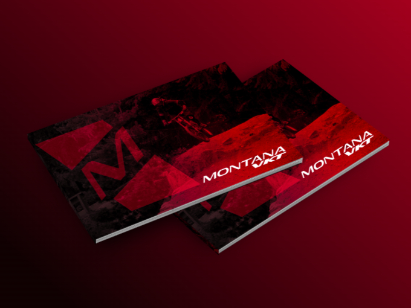
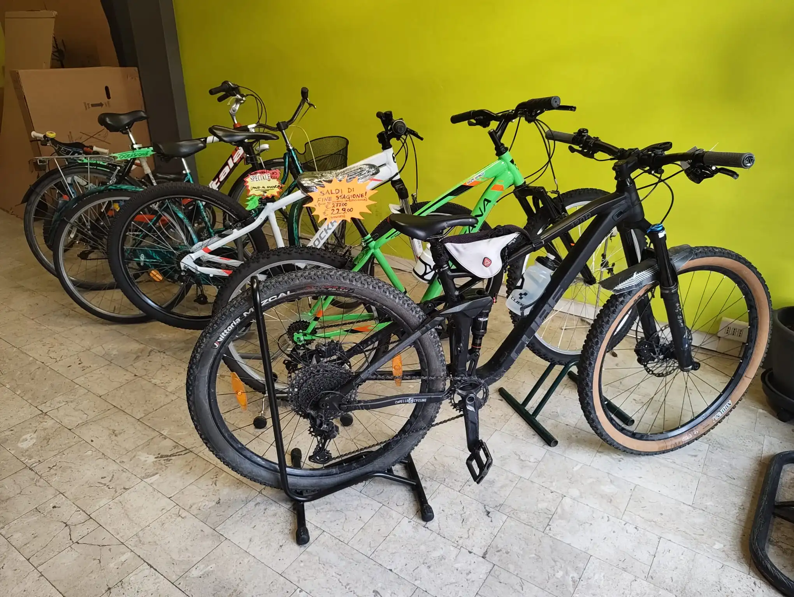
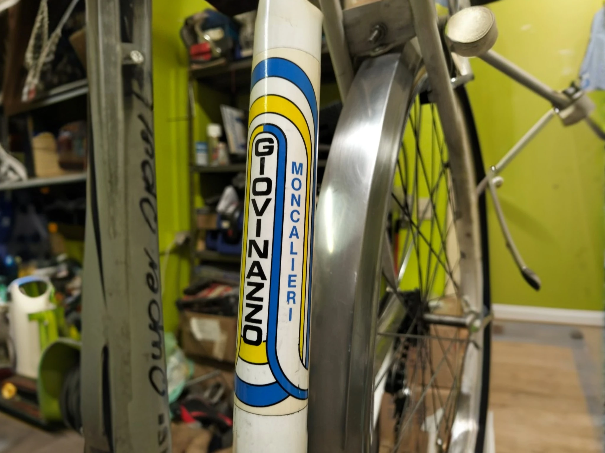

Dove Siamo
Via Cuneo, 53/a
10042 Nichelino (TO)

Prima a Moncalieri ora a Nichelino, Da oltre 60 anni le nostre mani sporche di grasso garantiscono che tu possa pedalare sicuro. Oggi quella stessa competenza artigiana guida ogni consiglio e ogni riparazione che facciamo
Ripariamo, restauriamo e costruiamo da decenni. Per noi la vendita è solo l’ultimo passo: prima viene la meccanica. Qui non trovi scatole da esporre, ma persone che sanno come funziona ogni componente.
Selezioniamo i marchi in base alla qualità, non alla moda. Se una bicicletta non passerebbe il nostro test su strada, non entra nel nostro negozio.
Vasta scelta di biciclette per tutte le esigenze:
città, corsa, mountain bike ed elettriche.

ricambi e accessori delle migliori marche per ogni tipo di bicicletta.

Servizio post-vendita con officina interna per riparazioni e manutenzione completa.

Realizziamo biciclette personalizzate, adattate al tuo stile e alle tue esigenze.

Hai bisogno di assistenza o vuoi saperne di più sulle nostre bici? Scrivici o passa a trovarci in negozio!
Lunedì – Venerdì:
09:00 – 12:30 | 15:00 – 19:00
Sabato:
09:00 – 12:30
Domenica:
Chiuso